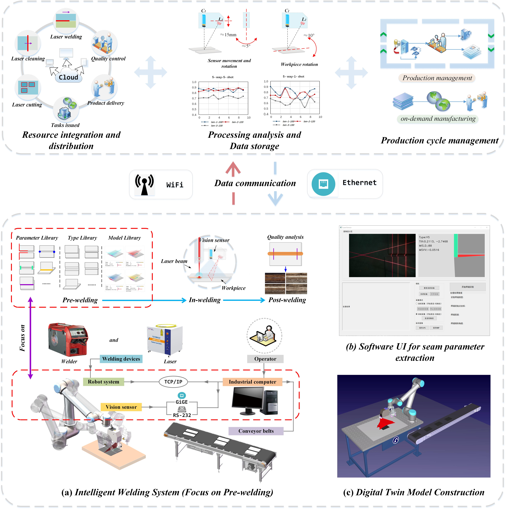
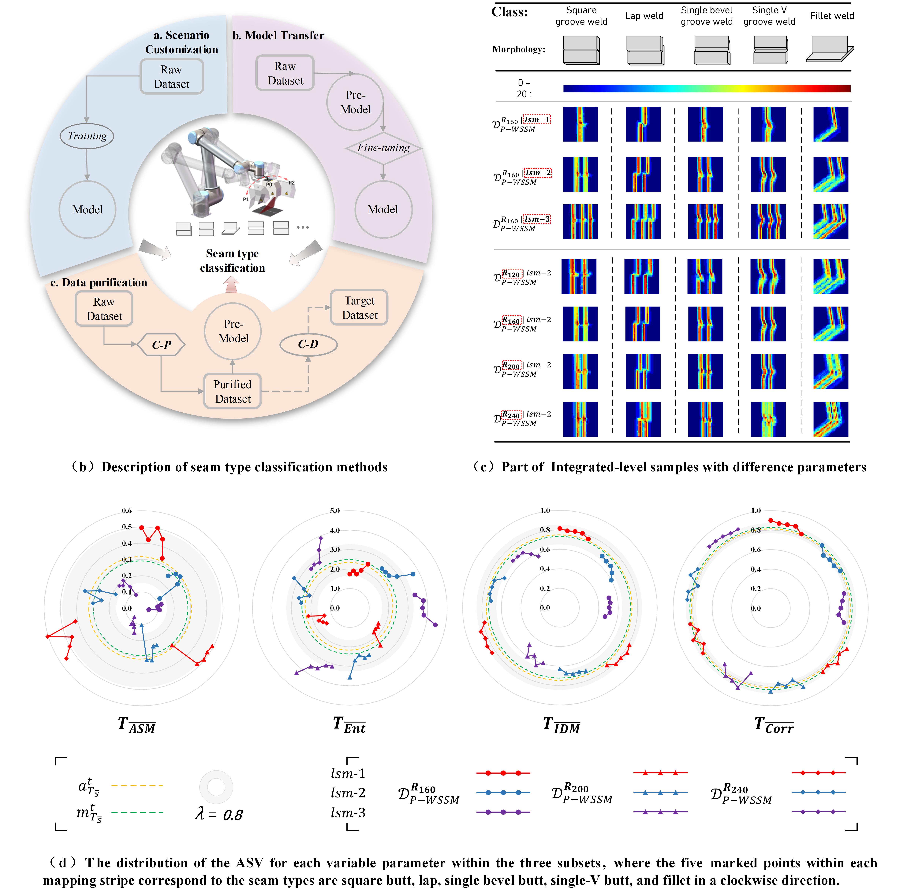

QUALIFICATIONS:
09/2018-04/2024 Master and PhD Student in Mechanical Engineering, (Successive Master-Doctor Program), Shanghai University, China.10/2022-10/2023 Visiting PhD Student in Mechanical Engineering, The University of Auckland, New Zealand.
09/2014-07/2018 Bachelor of Mechanical Engineering (Honours), Qingdao University of Science and Technology, China.
SIGNIFICANT DISTINCTIONS:
RESEARCH TOPICS:
REPRESENTATIVE PUBLICATIONS:
[1] H. Liu, Y. Tian, Y. Lu, J. Feng, T. Wang, L. Li, & M. Jiang, (2024). A systematic framework for tackling anomalous pre-welding workpiece postures with regular butt joints based on prototype features. Journal of Manufacturing Systems, 72:323-337. (CiteScore:23.3, Impact Factor:12.2, JCR: Q1), Doi: 10.1016/j.jmsy.2023.11.018.[2] H. Liu, Y. Tian, L. Li, Y. Lu, J. Feng, & F. Xi, (2023). Full-cycle data purification strategy for multi-type weld seam classification with few-shot learning. Computers in Industry, 150, 103939. (CiteScore:18.9, Impact Factor:8.2, JCR: Q1), Doi: 10.1016/j.compind.2023.103939.
[3] H. Liu, Y. Tian, L. Li, Y. Lu, & F. Xi, (2023). One-shot, integrated positioning for welding initial points via co-mapping of cross and parallel stripes. Robotics and Computer-Integrated Manufacturing, 84, 102602.(CiteScore:24.1, Impact Factor:9.1, JCR: Q1), Doi: 10.1016/j.rcim.2023.102602.
[4] Y. Tian, H. Liu, L. Li, G. Yuan, J. Feng, Y. Chen, & W. Wang, (2020). Automatic identification of multi-type weld seam based on vision sensor with silhouette-mapping. IEEE Sensors Journal, 21(4), 5402-5412. (CiteScore:7.7, Impact Factor:4.3, JCR: Q1), Doi: 10.1109/JSEN.2020.3034382.
[5] Y. Tian, H. Liu, L. Li, W. Wang, J. Feng, F. Xi, & G. Yuan, (2020). Robust identification of weld seam based on region of interest operation. Advances in Manufacturing, 8, 473-485. (CiteScore:9.1, Impact Factor:4.2, JCR: Q2), Doi: 10.1007/s40436-020-00325-y.
Research Statement:
I. (On going) Data integration and analysis system for pre-welding

We are working on building a data integration and analytics system to sever laser welding digital transformation. The system is expected to be able to integrate laser cutting, laser cleaning and laser welding, and provide full-cycle production management. It will collect and analyze production data to optimize processes and improve product quality. In this process, the purified data is uploaded to the cloud for process monitoring and provide a platform for online cloud manufacturing.
At present, we are focusing on the pre-welding data integration in intelligent welding system. To achieve this, three key libraries related to welding workpiece have been constructed: a parameter library, a type library, and a model library are constructed. We have completed several main works involving type recognition, initial point positioning, workpiece posture checking [1] and trajectory recognition for several common seam types. Besides, supporting industrial software and digital twin models are being developed to collect data and monitor processes in real-time.
[1] H. Liu, Y. Tian, Y. Lu, J. Feng, T. Wang, L. Li, & M. Jiang, (2024). A systematic framework for tackling anomalous pre-welding workpiece postures with regular butt joints based on prototype features. Journal of Manufacturing Systems, 72:323-337. Doi: 10.1016/j.jmsy.2023.11.018.
II. 1.2 Multiple seam types classification for intelligent integrated manufacturing (Self-constructed datasets)


This study [2] achieves a competitive multiple seam types classification result with flexible generalization, and provides a cost-effective solution for few-shot learning applied to more industrial scenarios. Two representative scenarios are as follows: Scenario S1 is an integrated welding workpiece with multiple seam types corresponding to different process requirements; Scenario S2 is a production line for the development of a large-scale welding process involving different seam types.
Also, we proposed a silhouette-mapping approach using laser spots in [4], which has a larger mapping area compared with laser stripes. This mapping pattern can still maintain feature stability in scenes with multiple interfering sources or complex seam profiles. A sufficient number of laser spot feature images are fed into a constructed CNN model, and a total of 97.6% of weld seam types were correctly identified.
[2] H. Liu, Y. Tian, L. Li, Y. Lu, J. Feng, & F. Xi, (2023). Full-cycle data purification strategy for multi-type weld seam classification with few-shot learning. Computers in Industry, 150, 103939. Doi: 10.1016/j.compind.2023.103939.
[4] Y. Tian, H. Liu, L. Li, G. Yuan, J. Feng, Y. Chen, & W. Wang, (2020). Automatic identification of multi-type weld seam based on vision sensor with silhouette-mapping. IEEE Sensors Journal, 21(4), 5402-5412. Doi: 10.1109/JSEN.2020.3034382.
III.Integrated vision sensor development and welding initial point positioning

This study [3] focuses on the positioning of the welding initial point for different seam types under the development of large-scale welding processes. Here, four typical seam types were integrated into a self-developed integrated vision sensor for the welding initial point positioning. With the co-mapping of cross and parallel stripes, the welding initial point can be positioned in a single operation via a controllable laser projector, which improves positioning efficiency and robustness while resisting interference from external light changes.
[3] H. Liu, Y. Tian, L. Li, Y. Lu, & F. Xi, (2023). One-shot, integrated positioning for welding initial points via co-mapping of cross and parallel stripes. Robotics and Computer-Integrated Manufacturing, 84, 102602. Doi: 10.1016/j.rcim.2023.102602.
IV. 1.4 Welding path identification and construction of laser welding/additive manufacturing systems

A robust identification method of weld seams based on region of interest (ROI) operations is proposed in [5]. Three common welding paths including straight-line, saw-tooth, and curve are identified based on the ROI iteration, achieving an identification error of within two pixels. This study serves to enable automatic weld trajectory identification without human intervention.
Also, I have experience in the construction of laser welding (b) and additive manufacturing (c) systems (Kuka/UR robots, IPG lasers, Powder conveyors for additive manufacturing). I am familiar with the design of customized workpieces and machining processes, including metal architectures and 3D printing materials. I gained this practical experience within actual companies based on a project called ”Key Technology Research and Demonstration Line Construction of Advanced Laser Intelligent Manufacturing Equipment from Shanghai Lingang Area Development Administration”.
[5] Y. Tian, H. Liu, L. Li, W. Wang, J. Feng, F. Xi, & G. Yuan, (2020). Robust identification of weld seam based on region of interest operation. Advances in Manufacturing, 8, 473-485. Doi: 10.1007/s40436-020-00325-y.
PROJECT CONTRIBUTION:
[1]Key technology research and demonstration line construction of advanced laser intelligent manufacturing equipment from Shanghai Lingang area development administration. （Pre-welding system development）[2] Automatic oral sampling robot based on deep learning and image processing. (Oral feature extraction)
[3] Intelligent scoring platform development for robotics teaching based on image processing. (Target feature segmentation and statistics)
[4] Grain feature extraction and analysis system for terrazzo floors. (Grain feature extraction and analysis)